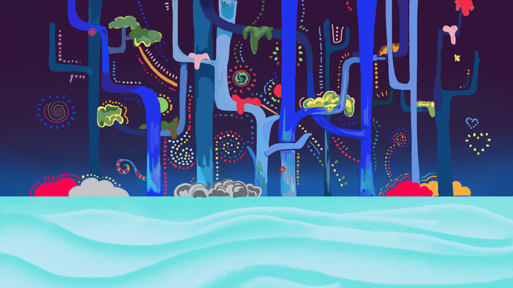
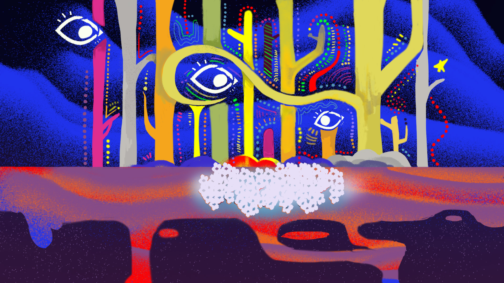
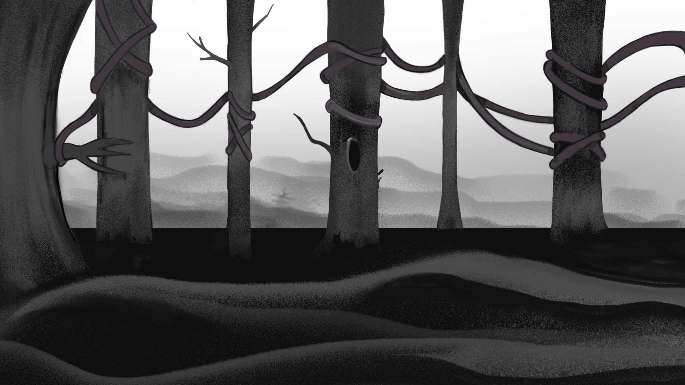
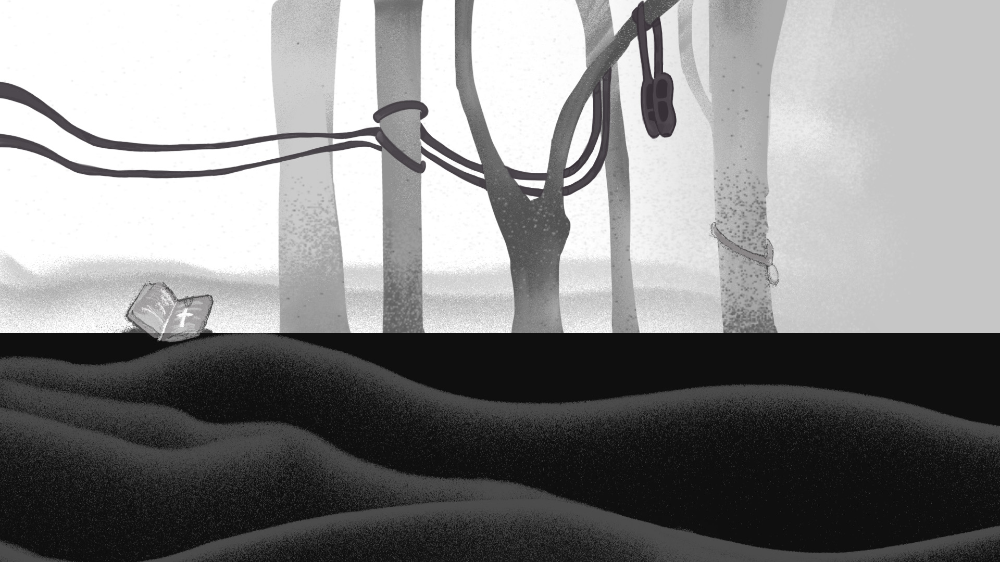
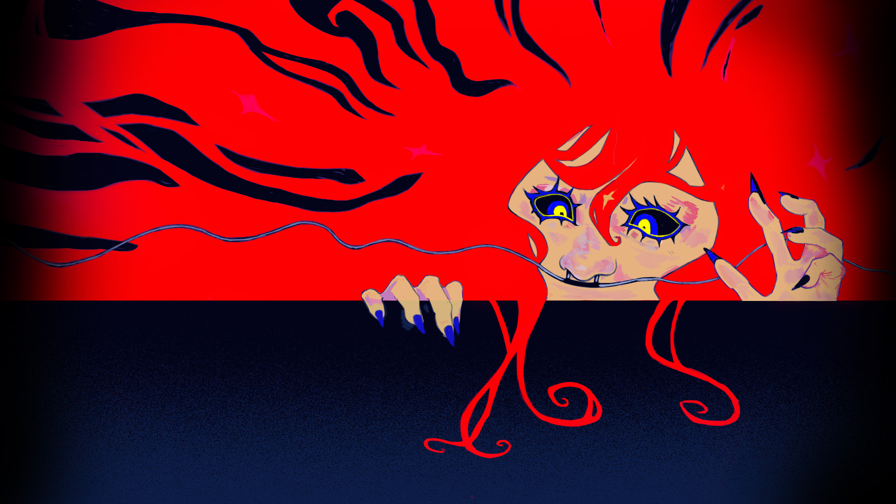
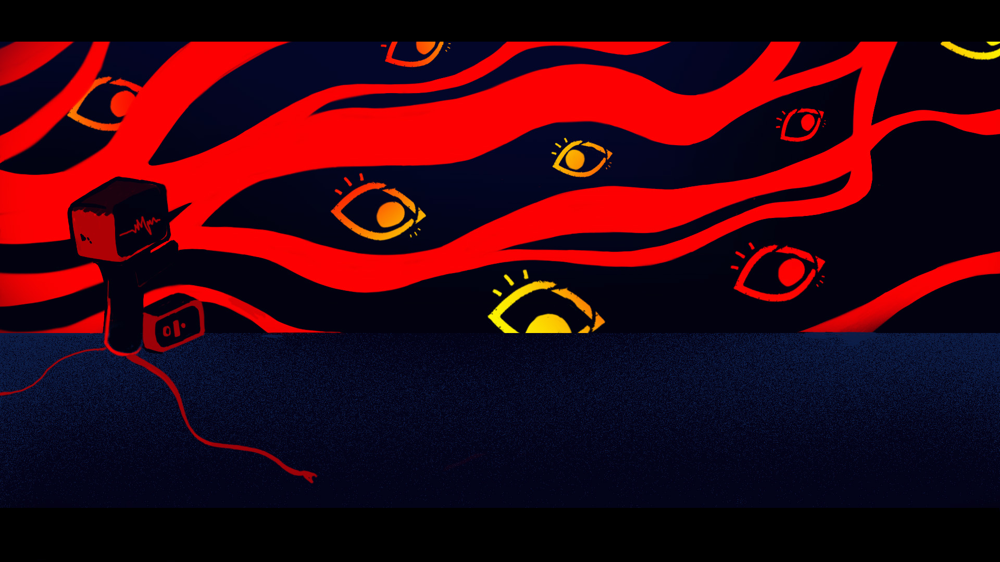

Discover
O que existe
do outro lado do sonho?
Em Onirium, emoções ganham forma.
Um universo para percorrer, sentir e descobrir.

World
Cada cenário,
uma forma de sentir.
Continue rolando para atravessar os cenários.





Cenário 1 de 6: TDAH, Cenário I

About
Da ideia
ao imaginário.
Onirium é um jogo autoral desenvolvido como projeto de TCC. Um encontro entre ilustração, narrativa e desenvolvimento de jogos.